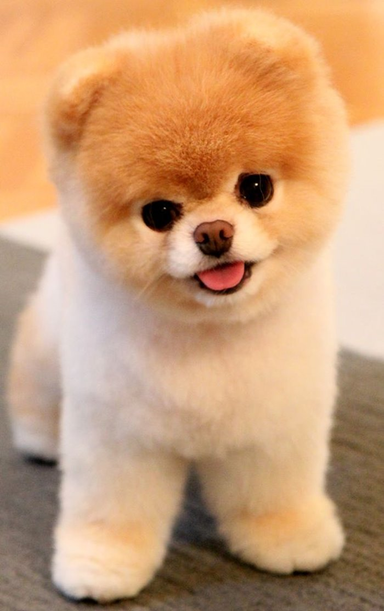

POMERANAC
Početna
Pomeranac
Mops
Buldog
Naručite
Kontakt
Osnovne karakteristike:
Pomeranci su veoma društveni, razigrani, živahni i veseli psi. Veoma su privrženi svojim vlasnicima i poznati su kao dobri čuvari.
Naime, iako su mali, imaju oštar lavež, misle da su veći nego što jesu pa se neće plašiti da napadnu i veće od sebe ako su oni ili
njihovi vlasnici ugroženi. Brzo se vezuju za svoje vlasnike i umeju dosta da pate kada vlasnici nisu duže kod kuće. Pomeranac je veoma
energičan pa je veoma bitno da ga vaspitavate dok je još mali da ne biste kasnije bili u situaciji da on šeta i sebe i vas, umesto da
vi šetate njega. Rana dresura je veoma važna kod ovog psa jer on može, ako mu dopustite, da pokaže svoju samovolju, da laje previše kada
čuje zvono ili vidi nepoznatog čoveka u kući ili da bude previše zahtevan i razmažen. Ipak, uz doslednu i strogu dresuru, ovaj maleni pas
može bez problema da živi u domaćinstvu sa drugim psima i životinjama. Veoma je inteligentan, rado uči trikove i voli da se igra. Ovo je
ekstrovertan pas, voli da bude u centru pažnje, ali može da pokaže i agresivnost i dominantnost ukoliko nije vaspitan kako treba. S obzirom
na svoju veličinu, dobar je za život u stanu, ali se ne preporučuje porodicama sa malom decom. Mala deca ponekad nemaju meru pa često umeju
da ugnjave psa i da se ophode prema njemu kao prema igrački, a Pomeranac svakako nije tip psa koji će imati strpljenja u takvoj situaciji i
onda postaje nervozan. Dobro se slažu sa starijom decom, a idealni su ljubimci starijim osobama. Čak i osobe koje nisu preterano ljubitelji
pasa ne ostaju ravnodušne pred ovom pufnastom masom pozitivne energije.
